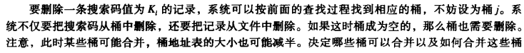

[CMU15445]:哈希表
在数据库中，散列这种数据结构在构建索引时被广泛使用，虽然散列没有B+树使用的广泛，但是仍然很值得学习
桶(bucket)
bucket表示可以存储一条或多条tuple的存储单元，可以在内存中也可以在磁盘中，对于内存中的哈希表来说，bucket可以是tuple的链表，对于磁盘中的哈希表来说，bucket可以是磁盘块的链表
桶的溢出(overflow)
由于一个bucket只能容纳一定数量的记录，因此，当不断有key被映射到同一个bucket，bucket就会发生溢出
哈希函数
哈希函数是哈希表的核心部分，哈希函数建立了key到bucket之间的映射，如果选择了一个好的哈希函数，效率的提升将是飞跃的
通常哈希函数用h()来表示，一个优秀的哈希函数会满足以下两个特征
分布均匀
理想情况下，每个bucket中都保存相同数量的tuple
分布随机
哈希函数的值应该是接近随机的，不应该发生某些bucket上有大量tuple,而其他bucket上tuple非常少甚至没有
当前性能比较高的的哈希函数如下(crc除外)
他们的性能比较如下图
注:当今比较有名的哈希函数还包含sha-256, md5等，但他们注重与安全性，效率很低，不适合在数据库中使用
Hashing Scheme
Hashing Scheme主要分为两种，静态哈希(Static Hashing), 动态哈希(Dynamic Hashing)
静态哈希
在创建基于静态哈希的散列索引的时候，有一个前提条件，即能够大体估计出总的record数目
哈希表的长度应该是固定的，一旦确定下来之后就不能够变更，事实上，随着数据库中记录的不断增加，静态哈希的效率将会逐渐降
低，因为当记录的数量远大于桶的时候，就不得不在溢出桶上进行查找，而这种查找是线性的
此时一种可行的解决方案是增长桶的数量，常常是增大一倍，但这往往意味着数据库的暂时中断，会带来性能上的瓶颈
根据是否使用溢出链表可以将散列的寻址方式分为开寻址与闭寻址
下面介绍几种开寻址中的寻址方法
线性探查法(Linear Probe Hashing)
线性探查法的基本思路就是当遇到哈希冲突，即不同key被映射到同一个bucket的时候，采用向bucket周围探查的方法寻找新的bucket
在上图中，当插入D时发现该bucket已经有值了，所以向下探查，找到一个空的slot，并将数据存在该slot中
该方法是最简单，最快速，也是被使用的最多的方法，该方法在查找或者插入元素时都表现的比较好，但是在删除元素时会比较棘手，来看看下面的例子
当删除C之后，如果我们想要找到D，由于D第一次映射的位置被C所占据，其当前位置是经过探查得到的，所以，当删除C之后，当查找D时，D就会被直接映射到一个空的slot，即查找失败，可以采用tomb 标志位来标志该情况
当读取到tomb标志位之后，就意味着应该要继续探查
还有一种方法是将与删除元素有联系的元素向上移动，但是比较麻烦，就不多介绍了
重复key
如果key是primary key,那么其对应的value一定唯一，如果key不是primary key的话，就可能发生一个key对应多条记录的情况，此时有两种解决方案
使用value list来存储重复key所对应的value
在hash table中，存储key|value，这样虽然比较浪费空间，但是影响不大，业界比较常用
- Robin Hood Hashing(罗宾汉探查法)
该方法旨在减少产生冲突后探查到的位置与原始位置之间的距离，在该探查法中，为每一个hash table中的条目维护一个distance,表示它与原始映射位置的距离，距离越高，表明其越poor,在探查过程中，如果发现某个entry的distance更少，即更rich,那么就会顶替它的位置
上图中,E经过两次探查之后，发现D比其更加贫穷，因此顶替它的位置
- Cuckoo Hashing
该方法使用两张哈希表，大大缩短了查找的时间
两张哈希表使用相同的哈希函数，通过不同的hasheeds来形成不同的哈希值，下面简单的描述一下该方法的查找流程
当插入一个记录时，该key会在两张表中形成两个映射的位置，此时选择一个空闲的slot
如果两个slot均为空闲，那么随机选一个，结束
如果两个slot均不为空闲，那么随机选择一个将其当前位置替代，进入步骤3
将替换出来的记录的key作为新的key,在另一张表中进行映射，进入步骤1
该方法的优势在于缩短了查找的流程，实际上最多只需要两次查找即可，但在极少情况下会陷入自循环，此时需要进行重新哈希
或者建立更大的hash table
动态哈希
动态哈希的一大优势在于可以持续进行hash table的扩充，而不需要进行额外的中断
下面将会介绍几种动态哈希的例子
Chained Hashing
该方法最简单，只需要在每一个hash table的slot中维护一个bucket链表即可，每当遇见哈希冲突，就将新的record接在对应位置的链表后面
可扩充散列(Extendible Hashing)
哈希函数产生的哈希值可以转换为二进制整数，记其位数为b, b的一个典型的值为32
该方法中，维护着一个
bucket address table,通过使用哈希值的前i为来建立key 与 bucket之间的映射关系上图中，hash table(bucket address table)左上角的数字为
global count, bucket上面的数字为local count其中间有一套复杂的规则
- 查找与插入
删除

可以看一下这个链接
http://www.mathcs.emory.edu/~cheung/Courses/554/Syllabus/3-index/extensible-hashing.html
linear Hashing
Linear Hashing维护了一个
split pointer,每次bucket产生溢出的时候，不管split pointer所指向的bucket有没有溢出，均将其分裂，即在hash table中添加新的slot，使其指向新的hash table, 然后将split pointer向下移动, 同时还要产生一个新的哈希函
数, 如果哈希的bucket的值比
split pointer要小，那么就应用新的哈希函数不过该方法使用的比较少
本博客所有文章除特别声明外，均采用 CC BY-SA 4.0 协议 ，转载请注明出处！